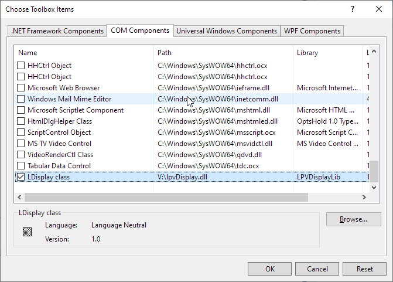
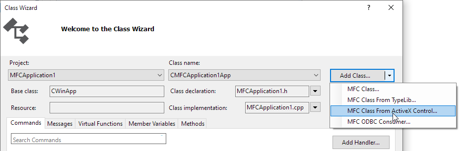

NOTE: Please make sure your LPV libraries are registered and licensed.
Step 1 - In the Resource View of your application, right-click anywhere in the Toolbox window, and then select Choose Items.

Step 2 - This dialog box shows a list of controls that can be added to the toolbox. The check box in the selected state means those items will already be present in the toolbox.
Step 3 - Select the COM Components tab, check the LDispaly class from the available list, and then click OK. The selected controls will now be displayed in Visual Studio toolbox.

Step 4 - Alternatively, you can also add tools by navigating to the lpvDisplay.dll location.
Step 5 - Once the controls are added, you can drag the control to the designer from the Visual Studio Toolbox and start using it. The assembly reference will automatically be added in the reference manager.

Step 1 - In the Solution Explorer of your application, right-click your project, and then select Class Wizard.

Step 2 - Select and open the Add Class From ActiveX Control Wizard.

Step 3 - Select to add class from File, then navigate to the lpvDisplay.dll location.
Step 4 - Select ILDisplay interface then click Add to generate the corresponding wrapper class.

Step 5 - Click Finish then OK. CLDisplay.h and CLDisplay.cpp file is generated and added to your project.
Step 6 - You can now use the display control in your application. See more detailed usage in demo/mfcdemo/MFCDisplay.
Step 7 - Alternatively, you can also use the out-of-box wrapper class under demo/mfcdemo/Wrappers, by including LPVDisplay.h and CLDisplay.cpp to your project.